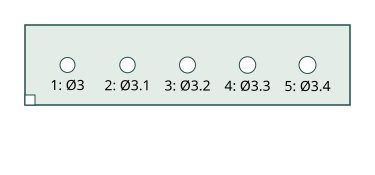
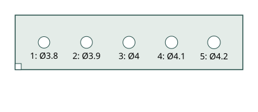
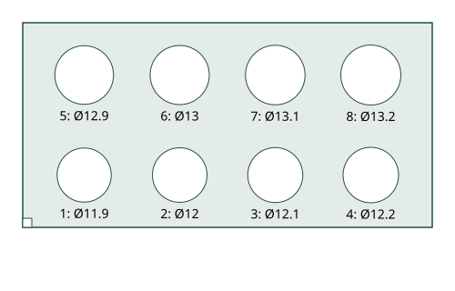
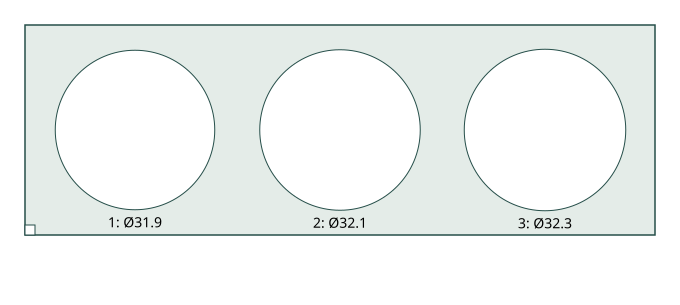
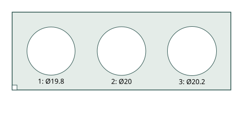
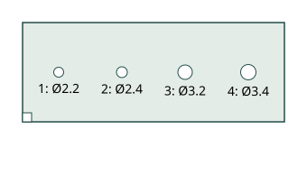
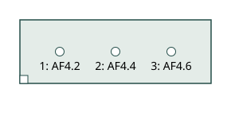

C01_M2_inserts
M2 嵌件底孔：Ø3.0 / 3.1 / 3.2 / 3.3 / 3.4，深4。参考 FINE SL M2，外径3.6、长3；孔底留3。

外形 65.0 × 16.0 × 7.0 mm · 7.09 cm³ · 实体/网格检查 PASS
下载 STLC02_M3_inserts
M3 嵌件底孔：Ø3.8 / 3.9 / 4.0 / 4.1 / 4.2，深5。参考 FINE SL M3，外径4.6、长4；孔底留3。

外形 75.0 × 18.0 × 8.0 mm · 10.45 cm³ · 实体/网格检查 PASS
下载 STLC03_small_bearings
靠缺角的一排为俯仰轴承外径12配合孔：11.9 / 12.0 / 12.1 / 12.2；另一排为轮轴承外径13配合孔：12.9 / 13.0 / 13.1 / 13.2。

外形 90.0 × 45.0 × 7.0 mm · 21.39 cm³ · 实体/网格检查 PASS
下载 STLC04_yaw_bearing
Yaw 轴承外径32配合孔：Ø31.9 / 32.1 / 32.3。

外形 126.0 × 42.0 × 9.0 mm · 25.76 cm³ · 实体/网格检查 PASS
下载 STLC05_yaw_journal
Yaw 轴承内径20配合轴：Ø19.8 / 20.0 / 20.2；露出高8，底板3，总高11。

外形 90.0 × 32.0 × 11.0 mm · 16.17 cm³ · 实体/网格检查 PASS
下载 STLC06_screw_bearing
M2 通孔Ø2.2 / 2.4，沉孔Ø4.2深1.6；M3通孔Ø3.2 / 3.4，沉孔Ø6.2深2.0 / 3.2。用于实测选定头型的承压与工具空间。

外形 58.0 × 22.0 × 6.0 mm · 7.34 cm³ · 实体/网格检查 PASS
下载 STLC07_M2_nut_pockets
M2 螺母窝对边4.2 / 4.4 / 4.6，深1.8；中心通孔Ø2.2。参考 GB/T6170 M2 螺母对边4、高1.6。

外形 48.0 × 16.0 × 6.0 mm · 4.45 cm³ · 实体/网格检查 PASS
下载 STL